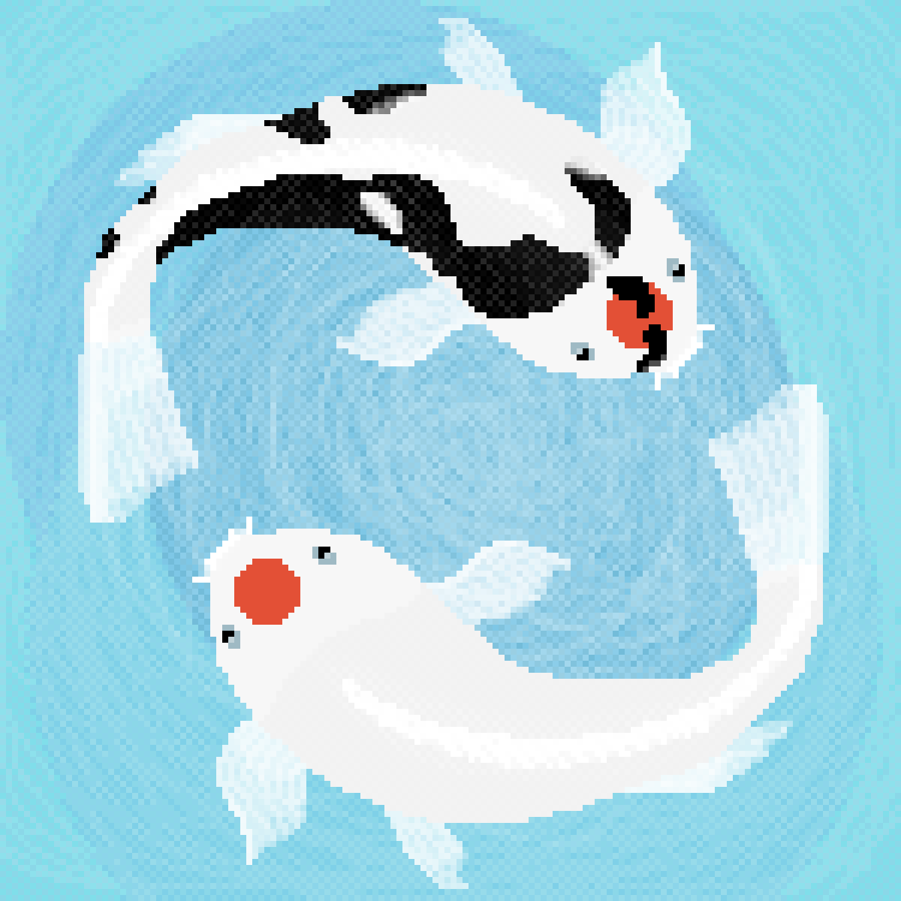
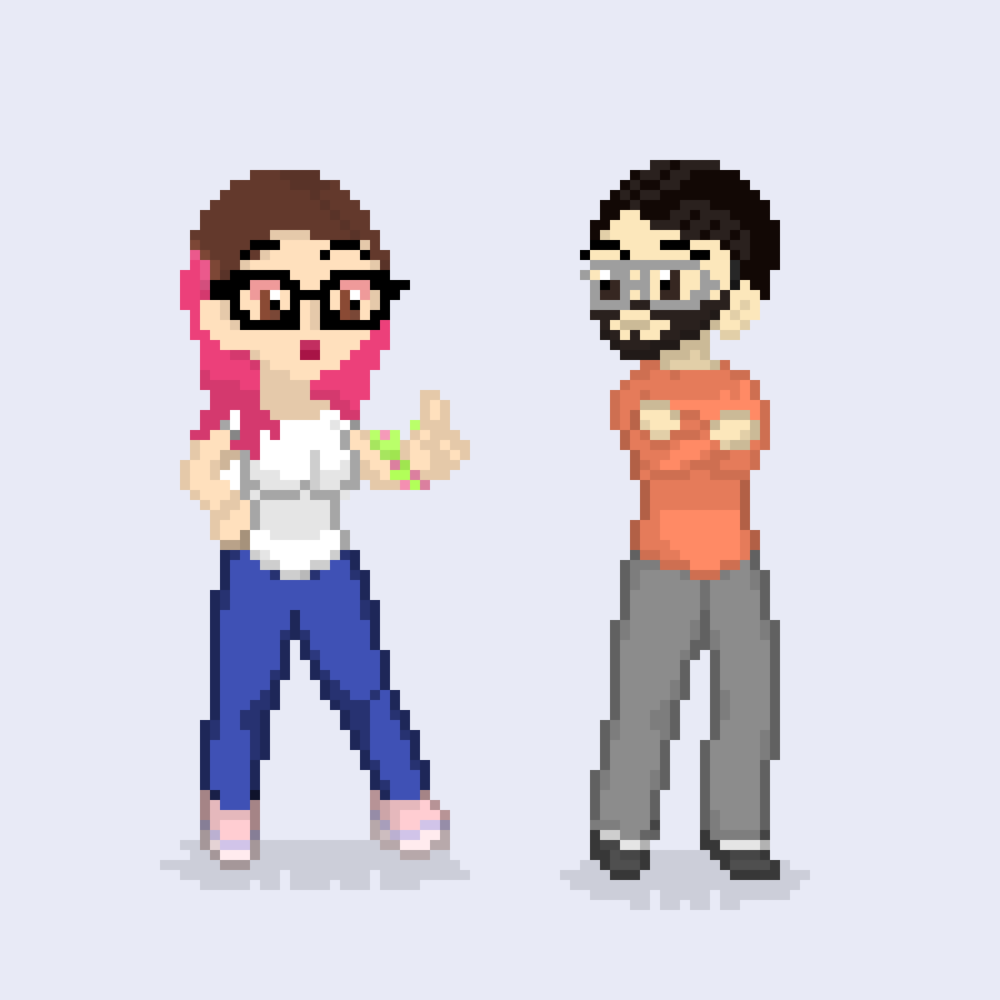
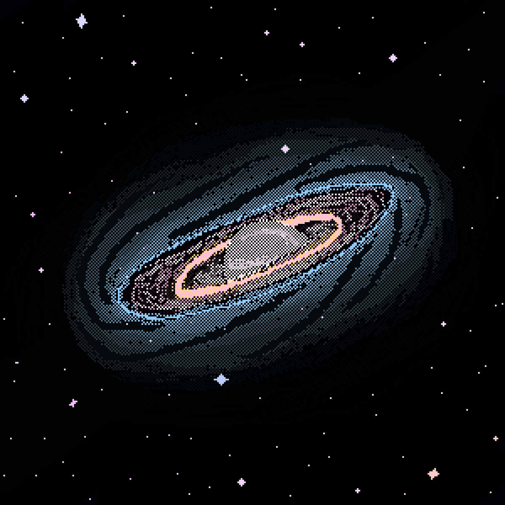
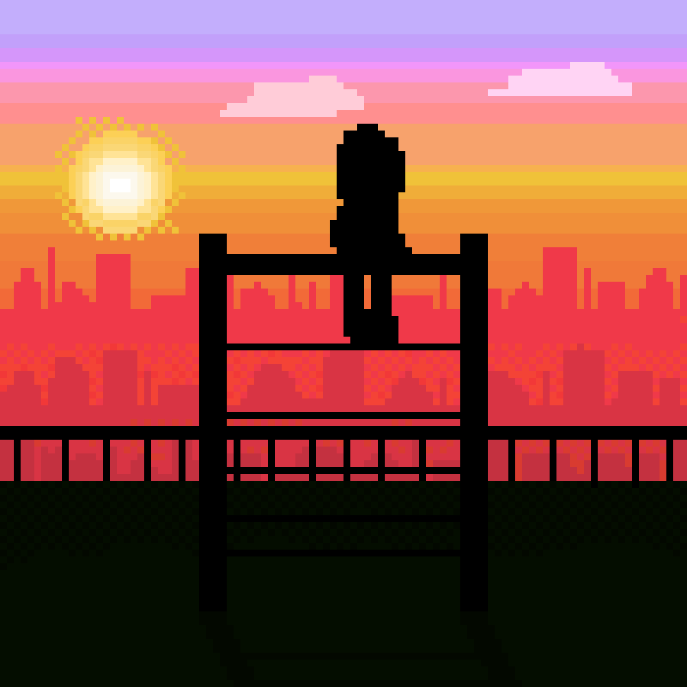
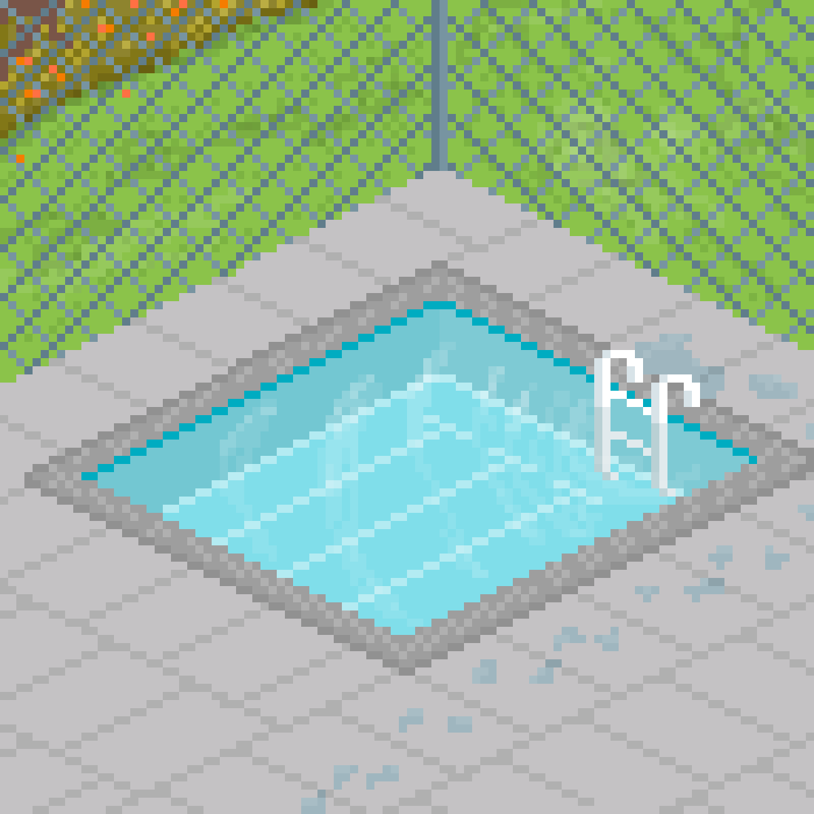
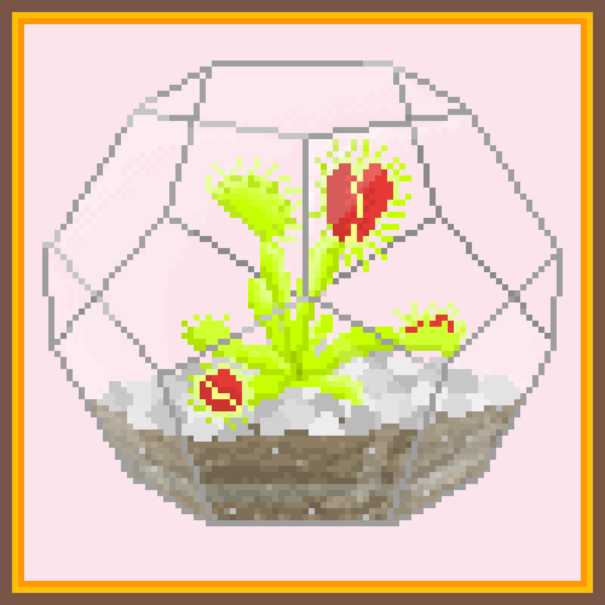
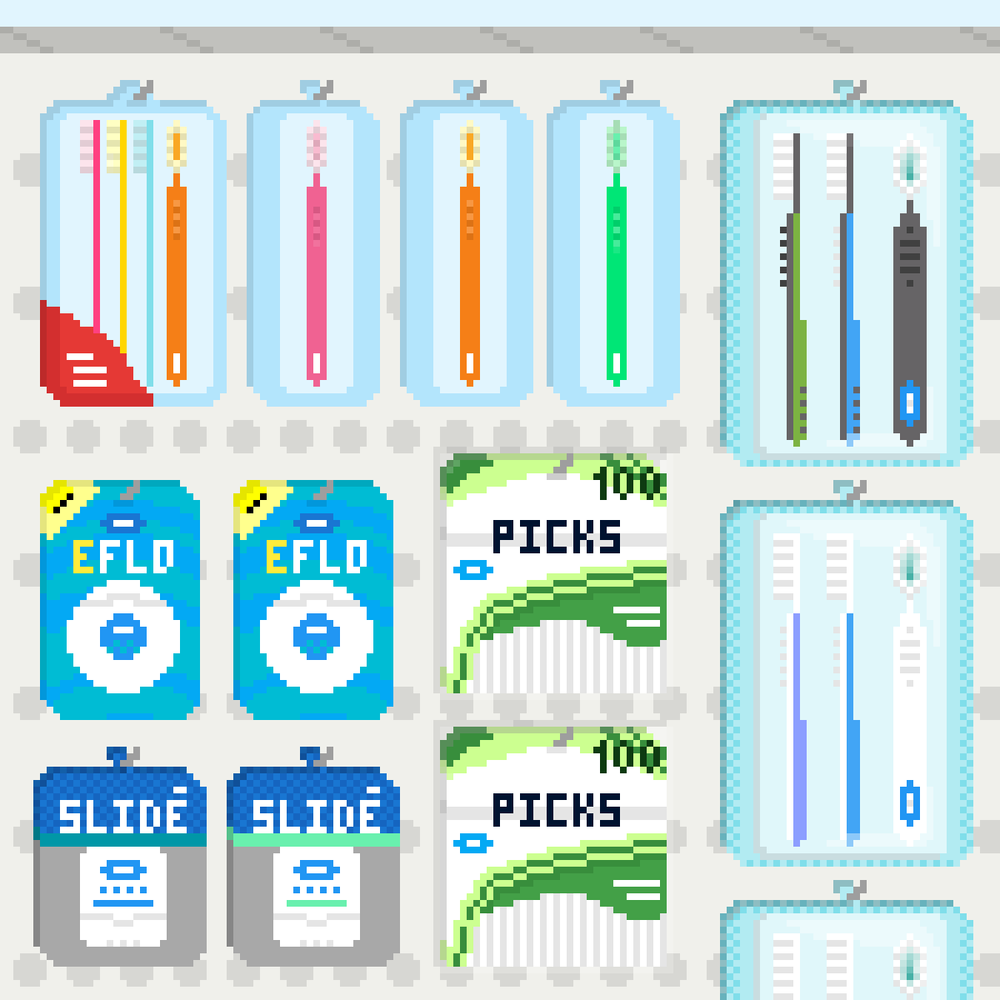

Estudiante de Ingeniería Mecánica en la Universidad Centroamericana "José Simeón Cañas". Relativo a mi carrera, he hecho pasantías en el área de energías renovables, principalmente manejando documentación y multimedia. Sin embargo, en la actualidad me gano la vida como agente de soporte técnico (si, call centera) dando soporte a G Suite.
Me considero una Jill of all trades con la adaptabilidad, aprendizaje y burnout que esto conlleva. A veces aprendo rápido, a veces no tan rápido. Eso sí, que si tengo una idea en la cabeza y tengo las herramientas correctas, siempre llegaré al final del camino que decido tomar.
Tengo interés en la cultura japonesa, la música, el pixel art, y (algunos) videojuegos. También me gusta leer, así como ver anime, películas y series. Me gustan tanto los perritos que en casa tengo seis. Durante la mitad de la cuarentena tuve un perico que llegó a mi patio por su cuenta, pero un día decidió no volver.
Mis grupos favoritos:
Canciones que más escucho últimamente:
Una playlist:
Quizás no es la más culta de todas, pero si tiene un par de cositas para todos los gustos:)
Lo he dejado un poco abandonado, pero aquí hay un GIF que hice.
Y aquí hay un poco más de pixel art. Haz click en una imagen para abrirla en una nueva pestaña.
|  |  | |
|---|---|---|
|  |  | |
|  |  |  |
Envíame un mensaje en Telegram aquí.
Mi correo personal es: ulmae18@gmail.com